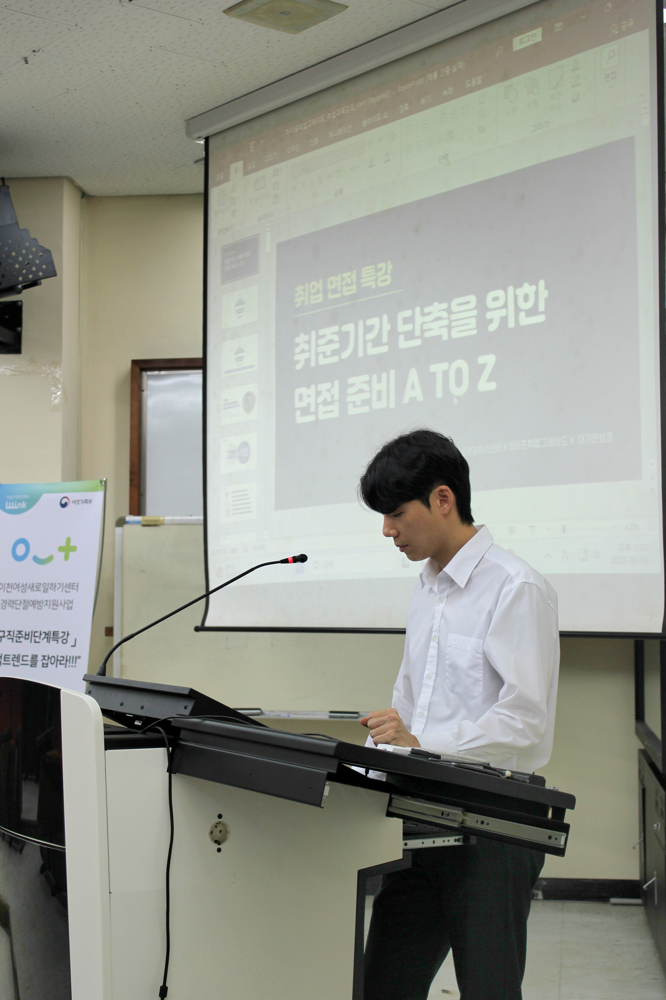
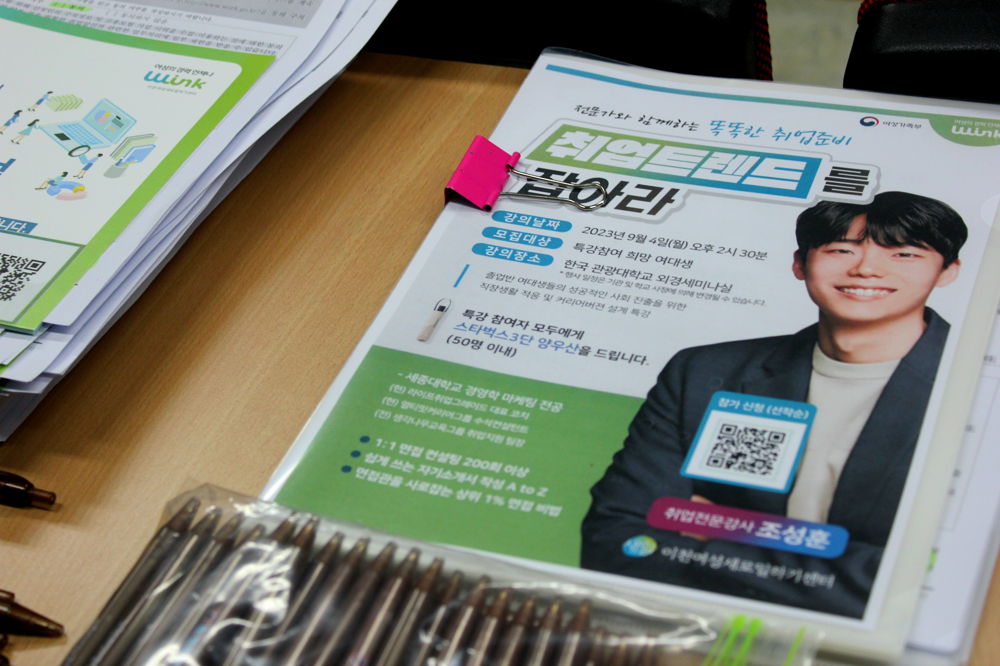
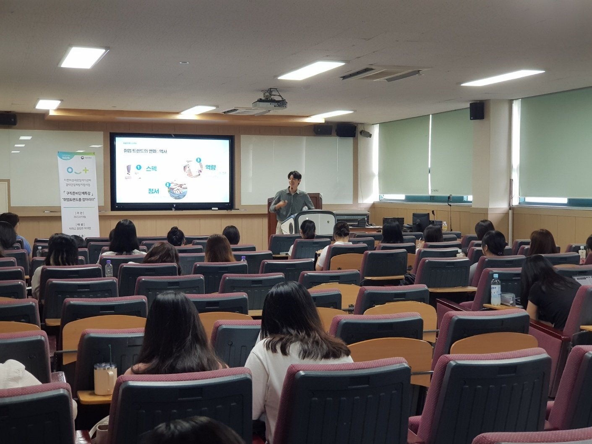

취업 컨설팅 업계에서 쌓아온 경험을 바탕으로, 진짜 변화를 돕고 있습니다.
8년+
취업 컨설팅 활동
100+
코칭 기업 · 기관
1:1·집단
코칭 · 강의 병행
취업 컨설팅 업계에서 약 8년간 활동하며, 공무원·군무원 면접부터 금융·보험권, 공공기관 전반, 자기소개서 컨설팅까지 다양한 분야의 취업 준비생들을 만나왔습니다.
그 시간 동안 확인한 한 가지는, 합격은 역량이 없어서 못 하는 게 아니라 자신의 역량을 제대로 표현하는 방법을 몰라서 놓치는 경우가 훨씬 많다는 것입니다. 라이프취업그레이드는 그 방법을 함께 찾아가는 공간입니다.



강의 이력
※ 아래 강의 이력은 취업 컨설팅 기관 소속으로 진행한 강의를 포함합니다.
대학 · 고등학교
청년 · 공공기관 취업 지원
산업 · 마케팅 멘토링
출강 문의
대학, 고등학교, 청년 지원센터, 공공기관 등
다양한 기관에서의 취업 · 면접 특강 출강을 진행하고 있습니다.
자세한 내용은 카카오톡으로 편하게 문의해 주세요.